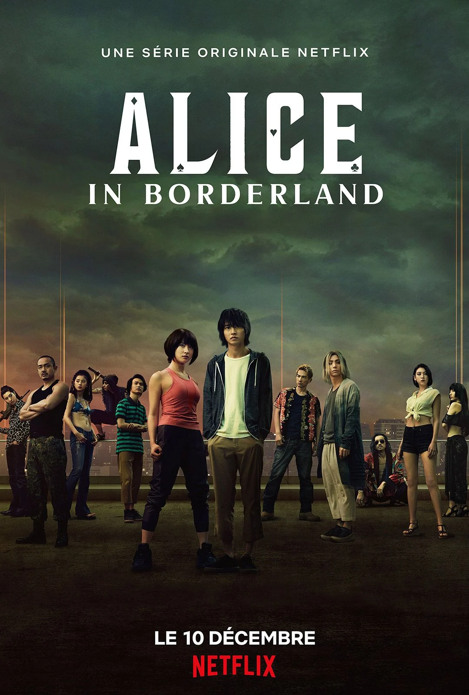

All of Us Are Dead
2022 - 4.2/5
Un lycée situé dans la petite ville de Hyosan devient l'épicentre d'une épidémie liée à un virus zombie. Pris au piège, les élèves doivent lutter pour s'échapper et éviter d'être contaminés à leur tour.
Squid Game
2025 - 4.0/5
Des personnes en difficultés financières sont invitées à une mystérieuse compétition de survie. Participant à une série de jeux traditionnels pour enfants, mais avec des rebondissements mortels, elles risquent leur vie pour une grosse somme d'argent.

Alice in Borderland
2020 - 4.3/5
Arisu, un obsédé de jeux vidéos, se retrouve soudainement dans une étrange version, totalement déserte, de Tokyo, et dans laquelle lui et ses amis doivent participer à des jeux dangereux pour survivre.